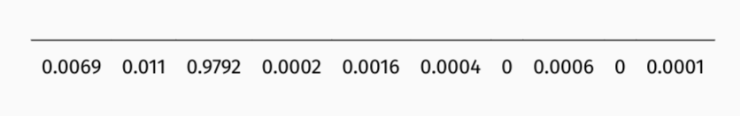
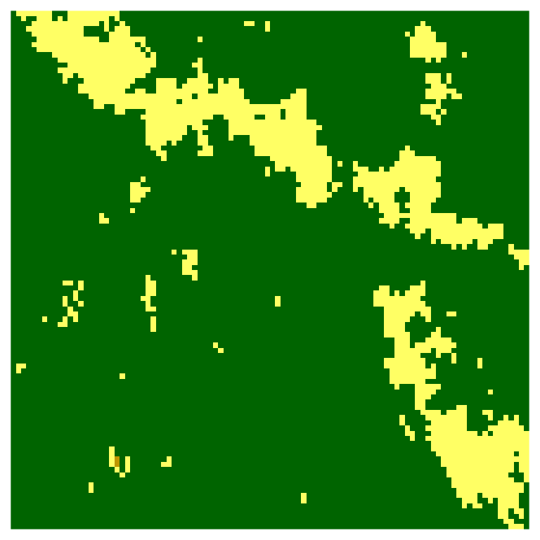
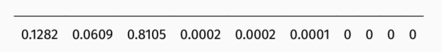
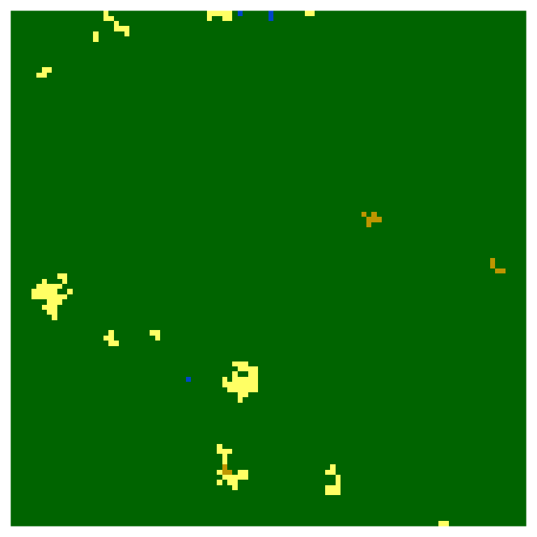
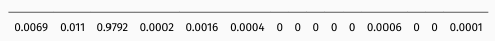
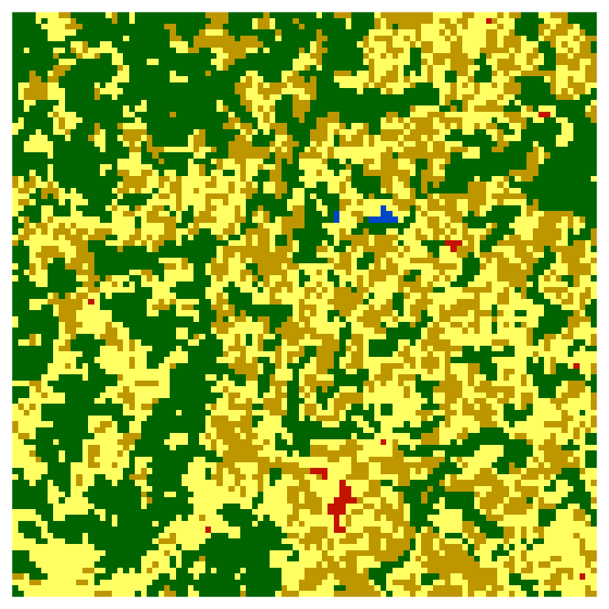
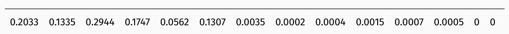

{kind=link}
{kind=link}
{kind=link}
{kind=link}
{kind=link}
{kind=link}
{kind=link}
{kind=link}
{kind=link}
{kind=link}
{kind=link}
library(terra)
library(motif)
r9 = rast("../exdata/r9.tif")
r9_sign_coma = lsp_signature(r9, type = "coma")
r9_sign_coma
r9_sign_coma$signaturePattern-based spatial analysis
How to discover and to describe
Spatial Patterns
In recent years, the ideas of analyzing spatial patterns have been extended through an approach called pattern-based spatial analysis (Long in in. 2010; Cardille in in. 2010; Cardille in in. 2012; Jasiewicz i in. 2013; Jasiewicz i in. 2015).
The fundamental idea is to divide a big area into a large number of smaller areas which we may call local landscapes patches.
The idea is to represent each of this arbitrary areas using a statistical description of the spatial pattern - a spatial signature.
This spatial signatures can be compared using a large number of existing distance or dissimilarity measures (Lin 1991; Cha 2007), which enables spatial analyses such as searching, change detection, clustering, or segmentation.
Spatial Signatures
Most landscape metrics are single numbers representing specific features of a local landscape.
Spatial signatures, on the other hand, are multi-element representations of landscape composition and configuration.
Spatial signatures dimension reduction & normalisation

Dissimilarity measures Example 1
Measuring the distance between two signatures in the form of normalised vectors allows the dissimilarity between spatial structures to be determined. The package [motif] (https://jakubnowosad.com/motif/) is designed to do this work.




Dissimilarity measures Example 2
Measuring the distance between two signatures in the form of normalized vectors allows determining dissimilarity between spatial structures.




Pattern-based spatial analysis
The distance between spatial signatures provides a powerful possibility to identify (dis)similarities in several contexts.


One to many
Finding areas with similar topography to the Suwalski Landscape Park
One to one
The left maps are showing that many areas in the Amazon have undergone significant land cover changes between 1992 and 2018. The challenge now is to determine which areas have changed the most. The right map shows these areas identified by high JSD values.
Many to many
Areas in Africa with similar spatial structures for two themes have been identified - land cover and landforms.
Many to many
The quality of each cluster can be assessed using metrics:
- Intra-cluster heterogeneity: determines distances between all landscapes within a group
- Inter-cluster isolation: determines distances between a given group and all others
Examples
coma
cove
r9_sign = lsp_signature(r9, type = "cove")
r9_sign
r9_sign$signaturesearch
library(sf)
landcover = rast(system.file("raster/landcover2015s.tif", package = "motif"))
ecoregions = read_sf(system.file("vector/ecoregionss.gpkg", package = "motif"))
ecoregion1 = ecoregions[1, ]
landcover1 = crop(landcover, ecoregion1, mask = TRUE)
plot(landcover)
plot(landcover1)
search_result = lsp_search(landcover1, landcover,
type = "cove", dist_fun = "jensen-shannon", window = 25,
output = "sf")
plot(search_result["dist"])min/max
search_result$id[which.min(search_result$dist)]
search_results_75 = lsp_extract(landcover, window = 25, id = 75)
plot(search_results_75)
search_result$id[which.max(search_result$dist)]
search_results_215 = lsp_extract(landcover, window = 25, id = 215)
plot(search_results_215)Exercises
- Read the study area polygon from the
exdata/harz_borders.gpkgfile using theread_sf()function from the sf package. - Read the land cover raster data for Europe from the file
exdata/lc_europe.tifusing the functionrast()from the package terra. Visualise both datasets. - Crop and mask the raster to the polygon boundaries. Visualise the results.
- Compute a spatial signature for the study area. Can you understand its meaning?
- Find out which areas of the Europe raster are most similar to the study area (this may take a minute or so). Try different window sizes (e.g. 200 or 500).